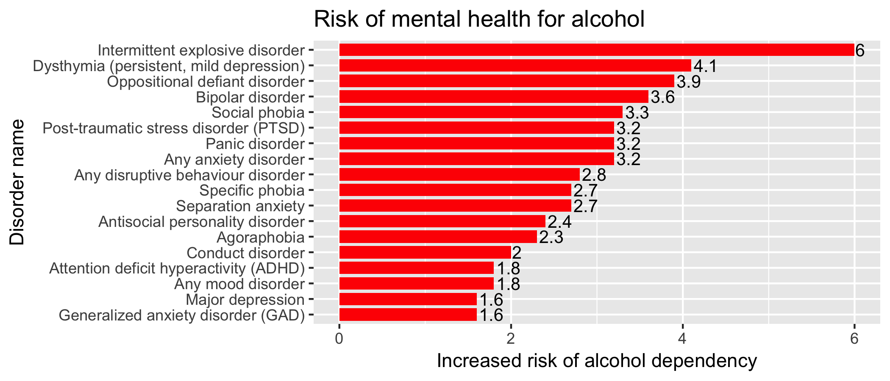

The leaflet plot above shows distribution of three types of alcohol
drinker in 2010. As we could see, drinking is so prevalent in well
developed countries especially those; in Western Europe and North
America, and this finding leads to the analysis of relationship
between alcohol consumption and GDP per capita which plotted below. We
could see, in 2010, almost 95 percents of adults had drunk alcohol in
previous year. Also, heavy drinking is defined as the proportion of
adult drinkers (aged 15 and older) who have had at least 60 grams or
more of pure alcohol on at least one occasion in the past 30 days. The
heavy drinking distribution is a lot different than regular drinking
distribution plot. We see that Mongolia and Madagascar have large
difference in percentage of population between situations of regular
drinking and heavy drinking. Also Russia, Canada and U.S.A have high
percentage of population in regular drinking situation but low
percentage of population in heavy drinking situation, which probably
indicate that some of their residents drink just for engagement or
getting warm. The plot of distribution of non-alcohol drinker shows
that most Asia and Africa countries have high percentage of population
that never drink alcohol in past whole year, which from assumption
could due to poverty or taboo.
The plot below provides a illustration of top 10 countries with
highest total alcohol consumption per capita, and we could see that
most of them are in Eastern Europe.
The R shiny app above describes the relationship between GDP per
capita (dollar) and alcohol consumption per person (litres). By
comparison, we see that at same level of GDP, residents in the
Middle East countries have significantly lower alcohol consumption
than those residents in Europe or North America, which probably due
to the cultural restriction on alcohol intake. However, when we
lower the maximum GDP threshold, we see some Asia countries and
Africa countries appear and they have much lower alcohol consumption
than those country in Europe, which prove our assumption above that
culture and poverty do play an important role in limiting alcohol
consumption for residents in those countries. After having a general
sense of worldwide alcohol consumption situation, lets' take a
closer look at consumption situation for three major alcohol types:
beer, wine and spirits.
The plot above I compare the recent 50 years of consumption
situation of three major alcohol beverages in four countries: China,
Germany Japan and United States which has different drinking culture
and alcohol preference. We could see that the demand of beer is much
more higher than wine and spirits for all four countries especially
in Germany which is famous for its black beer. Also, there is
obvious difference in wine consumption between those Western
countries and Asian countries, which probably due to different
drinking culture. Besides, we could see there is an interesting U
shaped curve on consumption of spirits in China, which probably due
to fact that there might be regulation on spirits between year 2000
and 2008
Then we take a closer look alcohol consumption per person in U.S.
We could see that the consumption of three types of alcohol of three
alcohols are pretty average over years except over the period 1920
to 1933 where there was a ban on the production, importation,
transportation, and sale of alcoholic beverages in U.S which was
known as the 'National Alcohol Prohibition'.
Also, the 3D view plot provides a another illustration of the
trend of three types of alcohols' consumption in U.S over years.
Furthermore, we examined the total alcohol expenditure in U.S
differentiated by sources drank at home and away from home from year
1935 to year 2014. We could see that though restaurants and bars are
still the main seller of alcohol in U.S due to both entertainment
and business purpose, more people start to purchase alcohol from
store and drink at home, which indicate the shift of occasion of
drinking.
Part 2: Alcohol's impact on personal health and
social order
There is both direct and indirect relationship between alcohol and
deaths. Indirect deaths from alcohol use disorders can occur
indirectly through suicide. The network plot depicts the linkage
between alcohol use, mental disorders and suicide, the shorter the
link between two nodes, the higher the weight (risk) value is.
Also there is evidence suggest that people with mental disorder
tend to have higher risk of alcohol dependency. The chart below
shows risks of having alcohol dependency for people with different
types of mental disorder. We could see that people with intermittent
explosive disorder, dysthymia, ODD, bipolar disorder and social
phobia are at lease 3 times as likely to develop alcohol dependency
relatively to those without.

Alcohol use disorder is defined by the International
Classification of Diseases as the presence of three or more
indicators of dependence for at lease a month within the previous
year. There is causal relationship between alcohol use disorder and
deaths (not include suicide), and we could see that in 2016, Russia
had the highest death rate, around 17 people per 100,000 individuals
die from alcohol use disorder. From the lineplot, we see that in
worldwide, the death rate from alcohol use disorder is gradually
decreasing over years with the rate around 2.37 per 100,000 people
die in 2016.
Moreover, driving after drinking alcohol has high risk of getting
traffic accident and even causing deaths. From data reported in
2013, we see that North America countries: United States and Canada
are the top two countries with 32.2 percent of road traffic deaths
cases attributed to alcohol; and to decrease that value, government
in both countries enacted strict law about driving under influence,
and we will check that value again once we get newest dataset.
Besides, after heavy drinking of alcohol people could easily lost
their mind and thus have high chance of commiting crimes. In the
worldmap of percentage of crimes related to alcohol, we see that
countries in Eastern Europe have significant higher portion of
crimes related to alcohol, and also from previous plot we also know
those countries have high alcohol consumption per person each year,
thus for those countries with high crime rates related to alcohol
limiting amount of alcohol sell per person might reduce crime rates
and stabilize social order.
Conclusion
Historically, alcohol is important on occasion of entertainment
and business, however we should always remember that we have limit
on how much we could drink and also how drinking impair our personal
health. Nationwide, there should be a law that limit how much
alcohol drink each person can purchase and drink to reduce rates of
alcohol related disorders, traffic accidents and crimes. Finally let
me referred a sentence that I excerpted online " I take
pride in the fact that I can handle uncomfortable mental states
without running to the liquor store (be they anger, lonliness,
melancholy, anxiety) and it is wonderful to know that I am HELPING
MYSELF IN A BIG WAY, because alcohol only makes these moods worse
(later)."